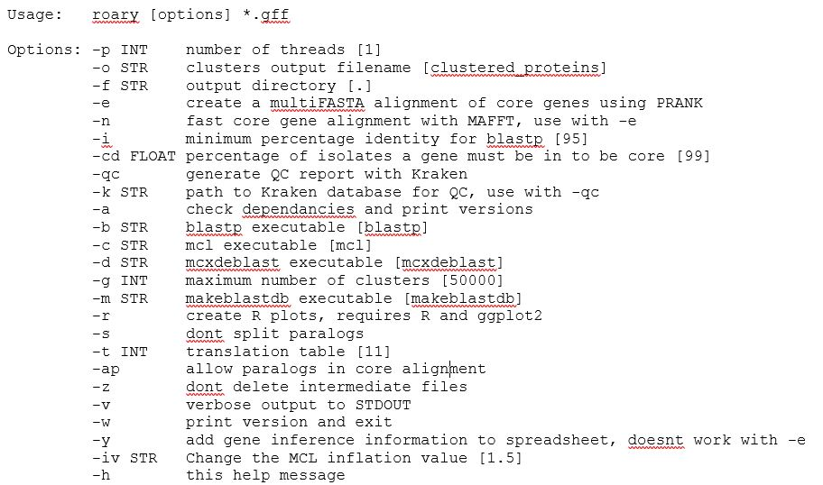

Click here to download the PDF version of this tutorial.
As NGS sequencing is becoming simpler and cheaper, increasing volumes of WGS data for bacterial pathogens such as M. tuberculosis are being generated. However, a significant part of the existing bottleneck lies within the analytical stage and the challenge for clinical and public health laboratories in accessing, extracting and interpreting the relevant and meaningful information. To bridge this gap, over last years several tools have been developed and described aiming at an audience with limited bioinformatic skills. These resources are, foremost, dedicated to the prediction of drug resistance from sequence data although other tools aiming at a genotypic characterization have been described as well. While some of these tools have also been deployed on an online server thus enabling easy access using a Guided User Interface (GUI) and remote analytical processing. Some mere examples of such tools for Tuberculosis:
• TBprofiler – enables drug resistance prediction, (sub)lineage assignament from raw read data. Features an online version and a standalone, locally deployable, command-line version;
• PhyResSE – uses the same philosophy as TBprofiler and also reports strain lineage and antibiotic resistance;
• Mykrobe Predictor – also reporting drug resistance and lineage from reads, this software runs locally;
• SpoTyping and Spolpred – these two tools report the spoligotyping profile from read data. Spotyping can query SITVIT database for SIT/Clade assignement for the obtained profile;
The downside of these tools is the limitation, to different degrees, of customizing the pipeline and the analytical workflow in case there is the need to perform additional steps or different parameters. Also, the caveat to the use of these resources also lies in the need for the critical interpretation of the results that are obtained.
In addition, other tools of more general use are also available for other pathogens, envisaging the detection of plasmid replicons, drug resistance genes and even for the analysis of the gene content across the core/pan genomes. This enables rapid extraction of important genotypic data that can be of clinical or epidemiological importance.
This module will cover the use of selected available tools as examples for the plethora of tools already made available and maintained by the scientific community. Some of these tools are presently implemented or being across diagnosis or public health microbiology laboratories worldwide.
Now that we have introduced some specific tools for M. tuberculosis let’s switch to more general tools. In the following exercises we will be using draft genome assemblies as input (before contig ordering and scaffolding) that you can obtain by following the exercises and steps in Module 2. So, the input will be a simple multifasta file containing multiple contigs. These exercises can also be completed using finished chromosome sequences that, e.g., can be found available in public databases.
Also, the assemblies used in this exercise can be obtained with any assembler provided your input is in the fasta format. That is the sole requirement!
In this first exercise we will aim at finding the genetic determinants for resistance in genome assemblies from Klebsiella pneumoniae. Inside the Module 4 directory there is a sub-directory called Kp_assemblies, inside you can find four fasta files each from a different strain (Kp1-Kp4).
There are different tools available for detection and characterization of the genetic determinants, some implemented in online servers with a graphical interface. By now you should be accustomed with these command-line tools which allow for a more precise parametrization and can be deployed into programmatic use in a pipeline or to large datasets.
Now, all the tools we will now use rely, in one way or another, on BLAST tools. The VM you are using has all BLAST tools installed and allow you to run these locally. As such, these tools end-up by acting as BLAST parsers with some additional features.
The most important caveat to take in account here: these tools are only as good as the databases that are associated. What does it mean? It is useless to be looking for OXA-181 carbapenemase coding genes or the mrk gene clusters if the database does not have those. Also, the annotation of the genes in the database will allow you to integrate additional.
Enough with the talk and let’s do some practical work. We will start by using AMRFinderPlus, which implements blastx that takes nucleotide sequences as input and searches across a protein database. This will be the way to go if you need to identify specific alleles (e.g. KPC-2 vs KPC-3) of different resistance genes which only differ in the amino-acid sequence. Doing blastn (nucleotide blast) may also work but it may lead to the wrong identification if synonymous mutations are present. The downside is that this tool is somewhat slower, but it draws all of its database from the NCBI curated database of AMR determinants.
Let’s try!
$ cd ~/Module4
$ cd Kp_assemblies
# You can try the following:
$ amrfinder --nucleotide Kp1.fasta --plus
# This will output to the screen. It is best if you redirect to a file:
$ amrfinder --nucleotide Kp1.fasta --plus > Kp1_amrfinder.tsv
$ amrfinder --nucleotide Kp2.fasta --plus > Kp2_amrfinder.tsv
$ amrfinder --nucleotide Kp3.fasta --plus > Kp3_amrfinder.tsv
$ amrfinder --nucleotide Kp4.fasta --plus > Kp4_amrfinder.tsv
$ amrfinder --nucleotide Kp5.fasta --plus > Kp5_amrfinder.tsv
# Notice the .tsv extension, it just informs you that this is a tab separated value file.
Now, why is it called AMRFinderPlus with the “Plus”? Plus what? In addition to resistance genes if you add the --plus argument (which I hope you did) it will also screen for metal resistance genes, resistance to biocides or a limited number of known virulence genes.
You can examine the output files using the cat or the more commands or you can open those in LibreOffice Calc. Just right-click and select open with LibreOffice Calc.
Look at the files. Do all bear genes capable of hydrolysing carbapenems? And Extended Spectrum Beta-Lactamases?
Notice there are columns for the identity and coverage. What would be good cut-offs here?
__________________________________________________________________________
Optional:
Check, for example, if there are resistance genes mapping to the same contig in Kp?
What are the consequences?
Pan/Core genome and Comparative Gene Content Analysis
This optional exercise uses the Roary pipeline for calculation of the pan genome across a set of samples. As input Roary takes GFF3 files which are annotation files (you may recall these from Module 2), ideally produced by Prokka.
Take a look at roary’s options:
You may have noticed that multiple options are available and besides the analysis of the pan-genome, roary can also produce a core genome alignment. Depending on the approach which can be useful for the phylogenetic analysis module in this course.
We will use the GFF3 files produced by Prokka for Kp2, Kp4 and Kp5. Why? These represent ST15 strains detected in Portugal, but each has a different resistance enzymes. So, what genes are common between strains and which are not?
$ cd ~/Module4/Kp_gff
$ conda activate roary
$ roary -v -f Kp_pan *.gff
# The -v switches on the verbose mode so you can keep track of what is going on.
# Alternatively, you can produce a core genome analysis but this will take longer (~1h) and will not be suitable to do in teaching sessions as it will align all genes individually:
$ roary -e --mafft -cd 99 -f Kp_core -r -v *.gff
# A folder containing the results is provided for the previous command.
$ conda deactivate
You can look at the roary’s documentation online to check the output files and what these contain. Let’s look at the summary_statistics.txt and the gene_presence_absence.csv files. This latter one can be opened in LibreOffice Calc for easier visualization.
Anything interesting? What are the total genes across this toy dataset and how many genes are core genes (99-100% presence)?
In the Kp_core folder [core genome analysis] there is a core_gene_alignment.aln file which can be used for phylogenetic purposes and comparison of clonality between isolates. You can reduce this alignment to the segregating sites using snp-sites:
# Let’s switch to another directory containing more GFF3 files with the output of a Roary core genome analysis:
$ cd ~/Module4/Kp_gff2/Kp_core
Look at the core_gene_alignment.aln
$ nano core_gene_alignment.aln
# press CTRL+X to exit.
# Now try:
$ snp-sites -o core_gene_alignment_segregant.aln core_gene_alignment.aln
# This will output the core_gene_alignament_segregant.aln file. You can see that it is considerably smaller.
Note that no correction for recombination has been carried out. You can do this with ClonalFrameML or Gubbins.
# We will now use Gubbins to detect/correct for recombination:
$ conda activate roary
$ run_gubbins.py --verbose core_gene_alignment.aln
$ conda deactivate
# This can take some time as it is an iterative process. The --verbose option allows you to keep track of the progress and debug if any error should occur.
<<-HOME